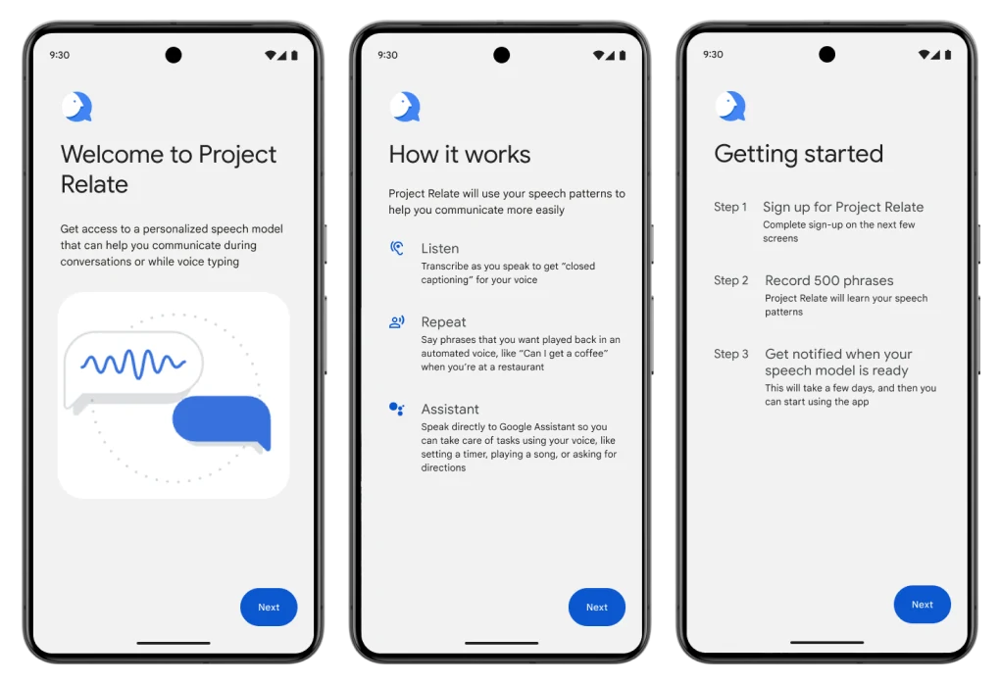
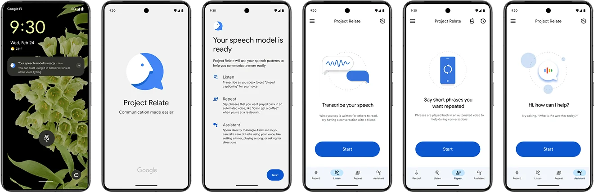

INPUT
— □ ×
01 — Background / About the App
What Project Relate does
Project Relate is a Google Research app that uses machine learning to help people with non-standard or atypical speech communicate more easily and independently, while giving them access to Google Assistant. Users train a personalized speech recognition model by recording a set of phrases; once trained, the app can transcribe their speech, read it aloud in a synthesized voice, and connect them to voice-activated tasks.
PROJECT_RELATE // GOOGLE RESEARCH
MODEL ONLINE
Speech, decoded
Machine learning that lets people with atypical speech be understood and stay independent.
PERSONAL MODEL
— □ ×
Trained on 500 phrases
OUTPUT
— □ ×
Understood by anyone
01 / Listen
Transcribes speech in real time
02 / Repeat
Reads it aloud in a synthesized voice
03 / Assist
Runs voice tasks via Google Assistant
04 / Goal
Communicate more independently
PRODUCT_BRIEF · SIGNAL_CHAIN
[ RELATE ]
02 — Problem
A funnel that collapsed after signup
Funnel data revealed steep drop-off after signup: only about 20% of invited users ever opened the app, and just 3% became 30-day active users. The steepest declines happened right after users started the app and were asked to record phrases, and again once they had recorded enough samples to build a personalized model. Many users simply didn’t understand what they would get in return for the effort.
PROJECT_RELATE // USER_FEEDBACK.LOG
SEV: HIGH · 05 ENTRIES
Problems
> unresolved · awaiting triage
ERR_01 / CLARITY
— □ ×
“It’s a bit unclear what I get after all this work.”
ERR_02 / TOUCH TARGETS
— □ ×
“Little icons are terrible. All buttons need to be bigger.”
ERR_03 / CONTROLS
— □ ×
“The start and stop button is a bit confusing. I thought I could just keep talking.”
Ignore
Solve
ERR_04 / EXPECTATIONS
— □ ×
“If I knew I had to record 500 to get the feature, I would have done it in one sitting.”
ERR_05 / ONBOARDING
— □ ×
“There were no instructions how to use the app after signing up.”
USABILITY_REVIEW_V1 · 2026
[ IGNORE ] [ SOLVE ]
PROJECT_RELATE // FUNNEL_TRACE.LOG
LEAK DETECTED · 02 STAGES
Drop-off
> where users vanish
LEAK_01 / ACTIVATION
— □ ×
Started the app → recording something
73% continue
27% lost
▾27%
Decrease in users
LEAK_02 / PERSONALIZATION
— □ ×
Recorded something → enough for a personalized model
84% continue
16% lost
▾16%
Decrease in users
FUNNEL_TRACE_V1 · 2026
[ IGNORE ] [ SOLVE ]
PROJECT_RELATE // RESEARCH_FUNNEL.TRACE
EXIT VELOCITY: 97% · 07 GATES
The Void
> 100 enter the funnel · 3 come out
-
100%Completed interest form
-
79%Invited to app
-
20%Started app
-
17%Recorded something
-
9%Recorded enough for personalized model
-
7%Used their model
-
3%30-day active users
RESEARCH_FUNNEL_V2 · WIREFRAME_TRACE · 2026
[ IGNORE ] [ SOLVE ]
03 — Challenge
Built without UX — value never surfaced
Project Relate had originally been built by engineers without dedicated UX support, so it lacked visual polish and a clear way to communicate its value. Users were asked to record 500 phrases with no explanation of why, leaving them confused, discouraged, and prone to abandoning the app before ever experiencing its benefits.
PROJECT_RELATE // CONSTRAINT.LOG
CRITICAL · ACCESS BLOCKED
Constraint
> gate detected before value delivery
WARN_01 / TRAINING QUOTA
— □ ×
Users must train 500 phrases before getting access to their speech model.
QUOTA_METER
— □ ×
500
Phrases required
- Reward unlocks at 100%
- Partial credit · none
- Model state [ locked ]
PHRASE_BUFFER · 060 / 500
— □ ×
Typical user records ~60
440 never recorded
CONSTRAINT_LOG_V1 · 2026
[ IGNORE ] [ SOLVE ]
04 — Solution
Three pillars for first-run
I designed and shipped a new onboarding sequence built around three pillars: feature education, step-by-step onboarding, and re-teaching. Together, these clarified the app’s purpose up front, guided users through the recording process with contextual tooltips, and re-engaged them with a refresher once their personalized speech model was ready.



05 — Impact
Shipped — and highlighted at Google I/O
The redesigned onboarding was featured in the accessibility portion of Google I/O in May 2024, and internal leaders across UX, engineering, and accessibility praised the work for improving usability and informing Project Relate’s product roadmap.
PROJECT_RELATE // PATCH_NOTES.LOG
STATUS: RESOLVED · LEAK_01 PATCHED
Patched
> largest onboarding leak closed
27%
Before
Delta
▾8
Points
19%
After
FIX_01 / ONBOARDING
— □ ×
Reduced the largest onboarding drop-off from 27% to 19% — more users successfully record their first sample.
- Drop-off before27.0%
- Drop-off after19.0%
- Delta▾ 8 pts
- Relative recovery▲ 30%
- Continued (start → record)73 → 81
PATCH_NOTES_V1 · 2026
[ SOLVED ]
Google I/O 2024 — Accessibility